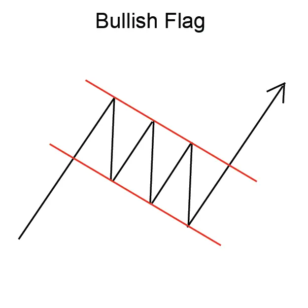
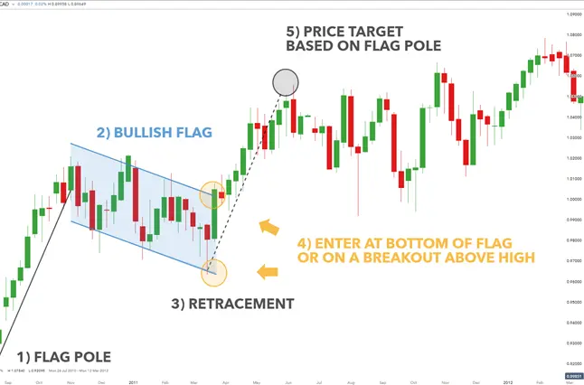

Implicaciones
Una bandera (bullish) se considera una señal bullish, indicando que la tendencia ascendente actual puede continuar.
Descripción
Una bandera (Bullish) sigue un aumento abrupto o casi vertical en el precio, y consiste en dos líneas de tendencia paralelas que forman una forma de bandera rectangular. La bandera puede ser horizontal (como si el viento la estuviera soplando), aunque a menudo tiene una ligera tendencia hacia abajo.
La tendencia ascendente vertical, que precede a una bandera, puede ocurrir debido a las reacciones de los compradores a un anuncio favorable de ganancias de la empresa, o un lanzamiento de un nuevo producto. El fuerte aumento de los precios es a veces referido como el "flagpole" o "mast".

Figura 7: Bandera (Bullish)
La forma rectangular de la bandera es el producto de lo que los analistas técnicos llaman consolidación. Consolidación ocurre cuando el precio parece rebotar entre un límite de precio superior y inferior. Esto puede ocurrir, por ejemplo, en los días siguientes a un anuncio de producto positivo, cuando la emoción comienza a disminuir, y menos compradores están dispuestos a pagar el alto precio que se ordenó unos días antes. Pero, al mismo tiempo, los vendedores no están dispuestos a vender por debajo de un límite de soporte más bajo.
Una señal de aumento ocurre cuando el precio rebota más allá de la línea de tendencia superior de la formación de la bandera, y continúa el movimiento original de los precios hacia arriba. Esto se considera una confirmación de patrón.
Cuando hablan de Flags, los analistas técnicos pueden usar jargón y referirse a la bandera como "volando a medio mast". Visualmente, esta referencia no es nada como una bandera a medio mastín, como en un día de luto nacional. En cambio, este término se refiere a la ubicación de la bandera -en el punto medio de lo que de otro modo sería una tendencia ascendente continua.
Características importantes
Las siguientes son características importantes para este patrón.
Líneas de tendencia
Las banderas son muy similares a los Pennants. Sin embargo, con una bandera, las líneas de tendencia de los precios tienden a correr paralelamente, mientras que con un Pennant, las lineas de tendencias de precios tiende a converger.
Volumen
A medida que la bandera se desarrolla, el volumen tiende a disminuir. Después de un anuncio positivo del producto, el precio puede haber alcanzado un máximo inesperado, y menos compradores estarán dispuestos a comprar. Sin embargo, el interés en las acciones puede reanudarse a medida que los precios bajen y los vendedores comiencen a bajar su precio. El aumento de la actividad explica por qué a menudo notará un fuerte aumento en el volumen al final de una bandera.
Duración del patrón
Martin Pring observa en su libro, Análisis Técnico Explicó que "las banderas pueden formarse en un período tan corto como 5 días o tan largo como 3 a 5 semanas". John J. Murphy identifica que las banderas "a menudo no duran más de una o dos semanas".
Consideraciones de negociación
Posibilidad de inversión de precios
En algunos casos raros, el precio romperá contra el movimiento original del precio y creará una tendencia inversa. La reversión del patrón puede ser señalada durante la formación de la bandera por un aumento agudo en el volumen, en vez de la disminución más típica.
Duración del patrón
La duración del patrón depende de la magnitud de las fluctuaciones de precios (consolidation). Cuanto más grandes sean las fluctuaciones, más tiempo tomará un patrón para desarrollarse.
Precio objetivo
Se considera comúnmente que la longitud de la bandera indica el aumento potencial de los precios. Cuando la Bandera se completa, el precio suele saltar para replicar la altura de la bandera original, mientras continúa en la dirección de la tendencia de entrada.
Criterios que respaldan
Volumen
El volumen debe disminuir notablemente a medida que se forman los patrones.
Un fuerte pico de volumen el día de la confirmación del patrón es un indicador fuerte en apoyo del potencial para este patrón. El pico de volumen debe estar significativamente por encima de la media del volumen durante la duración del patrón. Además, el volumen en el curso del patrón debería estar disminuyendo en promedio.
Criterios que refuten
Duración del patrón
Según Martin Pring, un patrón que exceda de "4 semanas para desarrollar debe... ser tratado con precaución". Después de 4 semanas, el interés en la acción es probable que disminuya para señalar que es poco probable que siga en una fuerte tendencia ascendente.
No hay aumento de volumen en la breakout
La falta de un pico de volumen el día de la confirmación del patrón es una indicación de que este patrón puede no ser fiable. Además, si el volumen ha permanecido constante, o estaba aumentando, durante la duración del patrón, entonces este patrón debe considerarse menos fiable y puede revertirse.
Inbound largo
Trend Shabacker escribe que, "Cuando un mast es largo... y es Flag relativamente pequeño, naturalmente deberíamos esperar que el movimiento sea bastante bien agotado cuando se alcance su objetivo indicado". Él sugiere que cuando se observa esta formación, y una continuación de los precios ocurre, es mejor usar la bandera como un "yard-stick" para indicar el nivel en el que "tomar los beneficios, paso a un lado, y vigilar para la evolución de los gráficos".
Comportamiento subyacente
Este patrón es efectivamente una pausa en una tendencia ascendente. El precio se ha adelantado con un aumento brusco; por lo tanto, la actividad del mercado toma una pausa antes de continuar la tendencia ascendente. Esta pausa se refleja en la disminución del volumen comercial. Asimismo, un aumento de volumen marca la reanudación de la tendencia ascendente.
